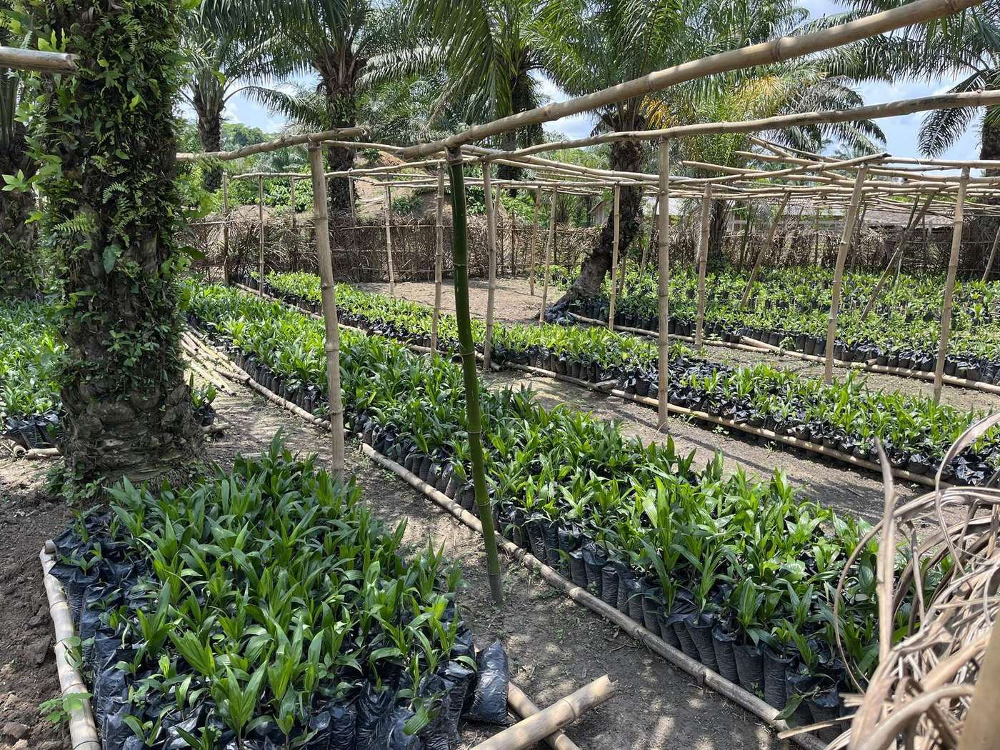

Acheter, transformer, distribuer.
L'exploitation fournit en direct, sans intermédiaire, avec des volumes et des délais annoncés à l'avance. Quatre façons de travailler ensemble, un seul point de départ : votre besoin.
Quatre façons de travailler avec l'exploitation.
Chaque voie a son interlocuteur. Aucune ne passe par un formulaire générique.
Distributeurs et revendeurs
Huile, cacao, safou, miel, en gros ou au détail, avec des volumes engagés sur la saison.
Exprimez votre besoinIndustriels agroalimentaires
Matière première brute ou semi-transformée, à cahier des charges.
Exprimez votre besoinRestauration et hôtellerie
Approvisionnement régulier en huile, fruits et légumes, à Brazzaville et Pointe-Noire d'abord.
Exprimez votre besoinPartenaires et investisseurs
Extension des surfaces, équipement de transformation, logistique fluviale. Sur dossier.
Recevoir le dossierComment ça se passe, en quatre temps.
Les délais indiqués sont ceux que l'exploitation devra tenir. Ils sont à confirmer avant publication.
- I
Le besoin. Vous nous dites le produit, l'usage, le volume et la destination. Nous répondons, avec un échantillon si c'est utile. Délai : [ jours ].
- II
Le devis. Volume, conditionnement, incoterm, délai. Une page, pas dix.
- III
La commande. Acompte : [ % à définir ]. La récolte ou le lot est réservé.
- IV
La livraison. Par rivière puis route, ou enlèvement à Brazzaville / Pointe-Noire. Export : [ à confirmer ].
Tout en un PDF, mis à jour chaque saison.
Chiffres, cultures, capacités, gouvernance, contacts. C'est la pièce qui manque le plus au site actuel, et celle qu'un acheteur ou un investisseur demande en premier. À produire avec l'exploitation.
Télécharger le dossier document à produire

Ce qu'on nous demande.
Les réponses sont à écrire par l'exploitation. Les questions, elles, sont celles que posent les acheteurs.
Quel est le volume minimum de commande ?
Livrez-vous hors du Congo ?
Quels délais entre la commande et la livraison ?
Avez-vous des certifications ?
Comment se passe le paiement ?
Exprimez votre besoin
Produit, usage, volume, pays : quatre réponses suffisent pour que l'exploitation vous fasse une proposition.
Envoyer mon besoinLe formulaire sera activé prochainement. En attendant, appelez le +242 05 536 16 05 ou écrivez-nous depuis la page Contact.